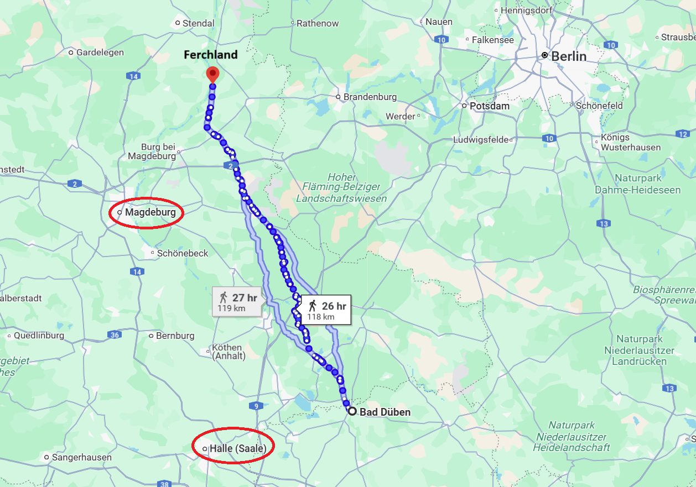
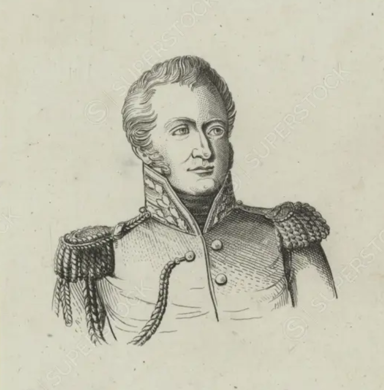
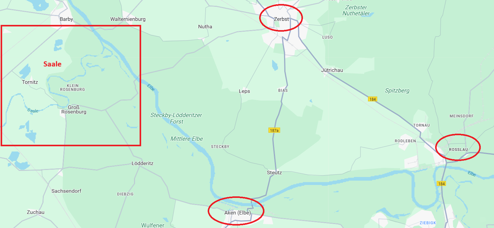
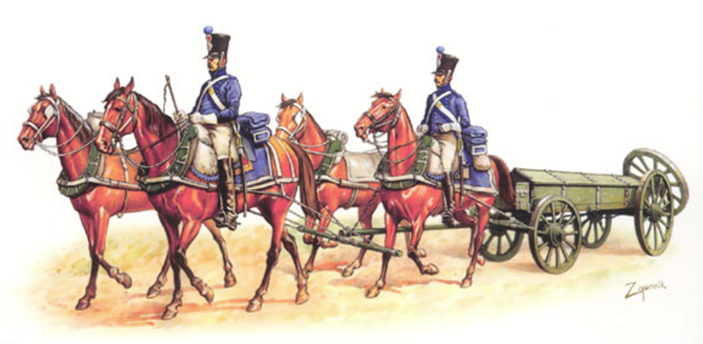
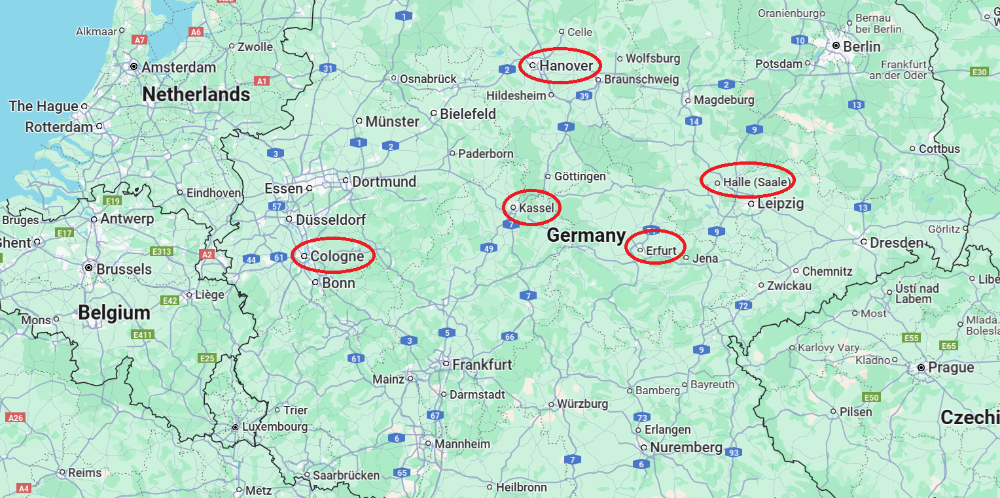

라이프치히로 가는 길 (18) - 거절할 수 없는 제안
게시: 2025-03-03T06:54:33+09:00
이제 나폴레옹과 그의 그랑다르메 본진이 슈바르첸베르크의 보헤미아 방면군보다 먼저 라이프치히에 도착할 것이 분명해진 상황에서, 블뤼허와 그나이제나우가 할 수 있는 것은 많지 않았습니다. 이미 언급한 대로, 베르나도트는 미적거리며 내렸던 라이프치히로의 진격 명령을 기다렸다는듯이 모조리 취소했습니다. 원래 계획대로 라이프치히로 진격하는 것은 자살행위가 분명했고, 블뤼허조차도 그걸 고집하지는 못했습니다. 라이프치히로 가지 않는다고 위험이 사라지는 것이 아니었습니다. 나폴레옹이 달려오고 있는 것은 단순히 라이프치히를 지키기 위해서가 아니라, 분산된 상태인 슐레지엔 방면군과 북부 방면군을 보헤미아 방면군이 합류하기 전에 각개격파하기 위해서였으니까요. 이대로 우물쭈물하고 있다가는 나폴레옹에게 덜미를 잡힐 판국이었으니, 블뤼허와 베르나도트는 빨리 움직여야 했습니다. 문제는 어디로 가느냐 하는 것이었지요. 블뤼허야 프로이센군의 상징적 인물에 불과했고 실제 두뇌는 참모장 그나이제나우였습니다. 그리고 그나이제나우는 매우 철저한 인물이었습니다. 그는 이미 이럴 때에 대비하여 슐레지엔 방면군이 재빨리 후퇴하여 보헤미아 방면군이 올 때까지 버틸 수 있는 요새지를 계획해놓았습니다. 바로 며칠 전 엘베강을 건널 때 애를 먹게 만들었던 바르텐부르크 일대의 엘베강 만곡부였습니다. 그는 수천의 병력을 차출하여 이 일대에 참호를 파고 보루를 쌓아 유사시 5만의 병력이 농성할 수 있는 규모의 진지를 구축하고 있었습니다. 문제는 이 진지가 아직 미완성이라서 나폴레옹의 공격을 얼마나 막아낼 수 있을지 미지수라는 점이었습니다. 게다가 언제 어디서나, 무작정 농성은 답이 아니었습니다. 처음에 바르텐베르크에 방어진지를 구축할 때의 의도는, 여기서 나폴레옹을 막아내고 있는 동안 베르나도트가 나폴레옹의 측면 또는 후면을 공격해주기를 기대했던 것이었습니다. 그러나 보면 볼수록 (프로이센 사람들이 보기에 겁장이인) 베르나도트가 그렇게 해줄 거라는 믿음이 생기지가 않았습니다. 차라리 엘베강을 건너 더 북쪽으로 후퇴하는 것이 낫지 않을까도 싶었지만, 그거야말로 안 될 말이었습니다. 애초에 여기까지 고생하며 온 이유가 베르나도트의 멱살을 쥐고 나폴레옹의 뒤통수를 치기 위함이었습니다. 만약 슐레지엔 방면군이 엘스터의 부교를 통해 후퇴한다면 그건 베르나도트에게 체면을 따지지 않고 저 멀리 북쪽으로 달아날 좋은 핑계거리를 주는 셈이 되었습니다. 일이 그렇게 되면 연합군 3개 방면군 중 2개 방면군만 나폴레옹과 싸워야 하는 신세가 될 것이고, 이 제6차 대불동맹전쟁은 또 다시 패전의 수렁으로 빠지게 되는 결과가 나올 수 있었습니다. 결국 블뤼허와 그나이제나우는 무슨 일이 있더라도 베르나도트와 함께 움직여야 한다고 결론을 내리고, 바로 어제 만났던 베르나도트에게 긴급히 연락장교를 보냈는데, 그 연락장교는 다름아닌 륄(Rühle) 소령이었습니다. 프로이센의 이익을 위해 짜르에게도 겁 없이 대들며 강한 목소리를 낼 수 있는 인물은 몇 없었으니까 당연한 선택이었습니다. 그나이제나우가 륄 소령에게 신신당부한 것은 슐레지엔 방면군이 바르텐부르크에서 농성할 때 나폴레옹의 측면이나 후방을 때려주겠다는 약속을 베르나도트에게서 무슨 수를 써서라도 받아내라는 것이었습니다. 늦은 밤에 베르나도트의 사령부에 도착해 밤새도록 회담을 마친 뒤 다음 날 아침 돌아온 륄 소령은 홀몸이 아니었습니다. 그와 함께 온 베르나도트의 부관 노아이유(Louis Joseph Alexis de Noailles) 백작은 베르나도트의 편지를 내밀었는데, 거기엔 놀라운 역제안이 담겨져 있었습니다. 요약하자면 이랬습니다. - 우리의 목적은 보헤미아 방면군이 라이프치히에 당도할 때까지 나폴레옹의 이목을 끌며 시간을 벌어주는 것이니 일단 후퇴해야 한다. - 어느 방향으로 후퇴할지에 대해서는 블뤼허에게 선택권을 주겠다. 페르힐란트(Ferchland)에서 엘베강을 건너 후퇴하거나, 잘러(Saale)강을 건너자.

(당시 블뤼허의 사령부가 있던 바트 뒤벤에서 페르힐란트까지의 거리는 약 110km가 넘는 거리로서, 대략 4~5일 행군거리입니다. 여기서 함정은 페르힐란트로 가려면 어차피 블뤼허는 잘러강을 건너야 한다는 점입니다.)

(베르나도트의 답장을 들고 온 그의 부관 노아이유는 이름에서 알 수 있듯이 프랑스인입니다. 원래 프랑스 귀족 집안 출신인 그는 나폴레옹보다 14살 연하로서 어린 나이에 프랑스 혁명의 여파에 부모를 모두 잃었습니다. 어머니는 1794년 단두대에서 목이 잘렸고, 아버지는 그보다 먼저 1792년 해외 망명했으나 결국 돌아와 나폴레옹에게 봉사하기로 했는데 나폴레옹은 그를 카리브해의 생도밍그(현재의 아이티)로 보냈고 거기서 아버지가 전사한 것입니다. 당연히 노아이유는 나폴레옹에 대해 무척이나 반감을 가지게 되었고, 1809년 7개월간 투옥되기도 했었습니다. 결국 그는 석방된 후 스위스로 망명했고, 유랑신세이던 그를 베르나도트가 채용했던 것입니다. 노아이유는 나폴레옹 몰락 후 계속 프랑스에서 정치인으로 활동했고 언제나 왕당파 노릇을 했습니다.) 여기서 놀라운 부분은 잘러강을 건너 후퇴하자는 제안이었습니다. 블뤼허나 그나이제나우는 겁장이 베르나도트는 당연히 왔던 길목인 로슬라우의 다리를 통해 북쪽으로 후퇴할 것이라고 생각했는데, 엉뚱하게도 서쪽의 잘러강을 건너자는 제안은 매우 신선한 것이었습니다. 또 엘베강을 건너 후퇴하더라도 로슬라우가 아니라 훨씬 북서쪽인 페르힐란트에서 엘베강을 건너자는 이야기도 엉뚱한 듯 보이지만 무척이나 교묘하면서도 꽤 설득력이 있는 것이었습니다. 말로는 블뤼허에게 양자택일할 선택권을 준 것처럼 보이지만, 실은 페르힐란트로 가려면 어차피 잘러강을 건너야 했으므로 결국 어느 쪽을 택하든 결국 잘러강을 건너야 했던 것입니다.

(잘러강을 건너거나 페르힐란트에서 엘베강을 건너자는 소리는 잘러강 일대의 지리를 잘 알고 있어야 할 수 있는 제안인데, 최근까지 베르나도트가 사령부를 설치해두고 있던 체릅스트(Zerbst)는 바로 잘러강이 엘베강에 합류하는 곳 근처에 있었습니다. 이 지도 왼쪽의 사각형 부분이 바로 잘러강이 엘베강과 합류하는 지점입니다. 아마 베르나도트는 그때 잘러강 일대의 지리에 대해 숙지를 해두고 있었던 모양입니다. 저렇게 지도를 열심히 본다는 점만으로도 베르나도트는 훌륭한 사령관이라고 할 수 있겠습니다.) 이런 제안을 하는 배경에 대해는 베르나도트의 편지에 별다른 설명이 없었습니다만, 륄은 나중에 회고록을 통해서 이 제안은 자신이 한 것이라고 주장했습니다. 륄 소령의 주장에 따르면 베르나도트는 나폴레옹이 달려온다는 소식에 그 어느 때보다도 도망쳐야 한다는 의지를 불태우고 있었기 때문에, 그나아제나우의 주문처럼 슐레지엔 방면군이 바르텐부르크에서 나폴레옹과 대치할 때 그 뒤를 쳐달라는 부탁은 할 수가 없었다고 합니다. 그러나 어떻게든 베르나도트가 엘베강 우안으로 달아나는 것을 막이야 했으므로, 자기가 임의대로 '차라리 잘러강을 건너 서쪽으로 후퇴하자'라고 먼저 베르나도트에게 역제안을 했다는 것입니다. 그 말을 들은 베르나도트는 놀라서 이렇게 말했다고 합니다. "그건 군사학의 모든 기초를 깨는 작전이다. 그럴 경우 블뤼허는 아직 후방에 있을 탄약 수송대는 물론, 근거지인 슐레지엔과의 연락조차 끊어질 것이다. 블뤼허가 그런 위험한 선택을 하겠는가? 게다가 나까지 엘베강이 아니라 잘러강을 건너 서쪽으로 가버리면, 당신들의 수도인 북동쪽의 베를린은 무방비 상태가 되는 것이 아닌가?" 이에 대해 언제나 당돌하고 겁이 없던 륄 소령은 이렇게 대꾸했다고 스스로 주장했습니다. "내가 아는 블뤼허 장군님은 절대 엘베강 우안으로 후퇴하실 분이 아닙니다. 그리고 러시아인들이 모스크바가 불타는 것을 용납했다면, 우리 프로이센인들도 베를린이 불타버리는 것쯤은 견딜 수 있습니다." 이 담대한 발언에 깊은 인상을 받은 베르나도트는 륄 소령의 주장대로 륄이 보는 앞에서 블뤼허에게 저런 답장을 써주었다는 것이 륄의 회고록에 담긴 사연입니다. 이게 과연 사실일까요? 그 여부는 알 수 없습니다만, 아무튼 공식 문서에는 잘러강을 건너 후퇴하자는 제안은 분명히 베르나도트가 한 것으로 되어 있습니다. 그리고 자기 입에서 즉흥적으로 튀어 나왔다고 륄이 주장하는 잘러강을 건너 서쪽으로 가자는 제안에 대해서는 블뤼허도 그나이제나우도 깜짝 놀랐습니다. 베르나도트의 말대로, 당장 슐레지엔 방면군의 탄약 수송차는 아직 엘스터에서 엘베강 좌안으로 넘어오지도 못한 상태였기 때문에, 이 제안에 따랐다가는 자칫 탄약도 없이 싸워야 할 판국이 되는 것이었습니다.

(식량이나 기타 보급품은 현지조달을 하는 경우도 많았고 또 노새든 짐마차든 뭐든 아무렇게나 운송을 해도 상관없었습니다만, 탄약은 이야기가 달랐습니다. 포병대를 위한 대포알은 매우 무거운 물건이었고 또 탄약포는 극히 위험한 화물이라서 caisson이라는 특수한 형태의 튼튼한 수송차량을 이용했습니다.) 그러나 이건 상당히 매력적인 작전이기도 했습니다. 나폴레옹은 드레스덴에 진을 치고 있는데도 3개 연합군 방면군이 드레스덴이 아니라 라이프치히에서 모이자고 이야기된 것은 거기가 나폴레옹과 파리 사이에 위치한 곳이기 때문이었습니다. 이미 연합군은 나폴레옹이 가장 싫어하는 것이 파리와의 통신이 두절되는 것이라는 것을 잘 알고 있었기 때문에, 연합군이 라이프치히로 집결한다면 나폴레옹은 반드시 드레스덴에서 기어나와 자신들과 결전을 벌이게 될 것이라고 생각했던 것입니다. 바로 그런 취지에서 잘러강을 건너 서쪽으로 가는 것은 나폴레옹을 더욱 안절부절하게 만드는 효과를 낼 수 있었습니다. 잘러강을 건너면 할러(Haale)가 있고, 그보다 더 서쪽으로 가면 에르푸르트나 카셀(Kassel), 하노버 등 어느 것이든 건드리기만 하면 나폴레옹이 발작을 일으킬 거점 도시들이 즐비했습니다. 자신의 후방이 끊어지는 것을 견디지 못하는 나폴레옹은 블뤼허-베르나도트와 저 남쪽에서 얼츠거비어기 산맥을 넘을 기회만 노리고 있는 슈바르첸베르크 사이에서 갈팡질팡하며 혼란스러워할 것이 분명했습니다. 그러니까, 블뤼허와 그나이제나우가 기획했던 바르텐부르크 만곡부에서 나폴레옹과 멱살을 쥐고 뒹굴면서 슈바르첸베르크의 보헤미아 방면군이 도착할 때까지 버틴다는 작전보다는 훨씬 뛰어난 작전안이었습니다. 이것이 바로 촌뜨기 프로이센 수뇌부와 나폴레옹의 B급 원수였던 베르나도트의 실력 차이였습니다. 결국 블뤼허는 자존심을 버리고 베르나도트의 제안에 따라 잘러강을 건너는 것에 동의했습니다.

(당시 전장은 드레스덴-라이프치히 일대였지만, 좀 더 큰 그림으로 보자면 이들의 위치는 프랑스 북동쪽이었습니다. 프랑스 국경 동쪽에 쾰른(지도에는 영어식/불어식으로 Cologne(콜로뉴)라고 표시)이 보이는데, 비록 독일계 주민들이 대다수를 이루기는 했지만 쾰른은 원래부터 프랑스와 활발히 교류하는 자유도시였고 프랑스 대혁명에 따른 확장 전쟁 결과 1796년 프랑스 영토가 되었습니다. 콜로뉴가 프로이센 땅이 된 것은 오로지 나폴레옹 때문입니다.) 그런데 알고 보니 거기서 끝이 아니었습니다. 만약 블뤼허가 프로이센의 자존심을 지킨답시고 그나이제나우의 작전안, 그러니까 바르텐부르크 만곡부에서의 농성을 고집했다면 슐레지엔 방면군 전체가 나폴레옹에게 그야말로 뼈도 못 추리고 박살이 났을 것이라는 것이 뒤늦게 드러납니다. 프랑스군의 B급 두뇌인 베르나도트의 머리에서 나온 작전안조차도 저렇게 대단했는데, A급, 아니 S급 두뇌였던 나폴레옹은 당연히 이들의 상상을 뛰어넘는 작전을 펼치고 있었기 때문이었습니다. 이제 시점을 나폴레옹쪽으로 옮기도록 하겠습니다. Source : The Life of Napoleon Bonaparte, by William Milligan Sloane Napoleon and the Struggle for Germany, by Leggiere, Michael V With Napoleon's Guns by Colonel Jean-Nicolas-Auguste Noël https://www.britannica.com/event/Napoleonic-Wars/Dispositions-for-the-autumn-campaign https://www.napoleon.org/en/history-of-the-two-empires/timelines/1813-and-the-lead-up-to-the-battle-of-leipzig/ http://www.historyofwar.org/articles/campaign_leipzig.html https://fr.wikipedia.org/wiki/Louis_Joseph_Alexis_de_Noailles https://www.superstock.com/asset/xportrait-alexis-de-noailles/6145-44254327 https://www.wonderlandmodels.com/hat-industrie-1-72-napoleonic-french-ammunition-caisson/